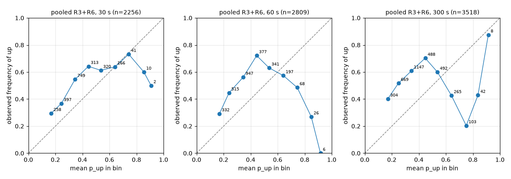

Hyperliquid testnet · BTC perpetual · Oct 2026
Can a jev-like model trade?
A bot lets a language model forecast the BTC perpetual's next 60 seconds and trade on it, on the Hyperliquid testnet. I then tried to make the model better with a fine-tune. This page is the evidence, computed from the bot's own logs.
Did the software work?
Yes. It was judged first, as the project set out.
| Check | Result |
|---|---|
| Reconciliation with the exchange | Every live run agreed on fills, fees and position. closedPnl agreed too, except the last run, $0.00018 off over 203 fills (the exchange rounds each closing fill). |
| Safety drills | Loss-limit kill, short decider deadline (24/24 late holds, 0 fills) and maker cancel-on-kill worked live. Flatten retry and stale-feed resume were tested in code only. |
| Unattended | 2 hours on a VM, 0 error events. Memory +0.45 MB/h, not levelled off. Not overnight. |
| Latency | Model p50 41 ms, p99 289 ms, 0 late of 1,365 decisions (taker, VM). |
| Tests | 1,007, with an independent review and planted-bug checks on every milestone. |
Was the model any good?
Judged on calibration (Brier score against a running base rate), not P&L. Positive means worse than the base rate. Every interval includes zero: the data cannot say either way.
| Run | Model | 60 s Brier minus base [95%] | 60 s AUC [95%] |
|---|---|---|---|
| R3+R6 pooled | original | +0.0271 [−0.0155, +0.0653] | – |
| R6, 1 h maker | original | +0.0278 [−0.0441, +0.0934] | 0.647 [0.509, 0.776] |
| R7, 1 h maker | original | +0.0168 [−0.0329, +0.0512] | 0.568 [0.450, 0.683] |
| Fine-tuned run, 1 h maker | fine-tuned | +0.0377 [−0.0305, +0.1077] | 0.614 [0.492, 0.736] |
The model tended to lean down (mean forecast 0.35–0.42 up) while the price rose 51–55% of the time in two of the runs. The one repeated hint is ranking at 30 s (AUC 0.686 then 0.601), better than chance but not better calibrated. Consecutive decisions overlap, so the real sample is much smaller than the decision counts.

The fine-tune
After the live runs showed no skill, I checked whether a better model was even possible before spending GPU time.
- Feasibility. 67 hours of mainnet and testnet order books. Simple models on the prompt's own features predict the testnet 60 s move (AUC 0.619), and better with mainnet prices added (AUC 0.666). That suggests testnet follows mainnet: learnable, but a testnet artefact. At 900 s, nothing.
- Fine-tune. A LoRA on the 9B decider with mainnet prices in the prompt. On 8,782 held-out decisions:
| Forecaster | Brier | Brier minus base [95%] | AUC |
|---|---|---|---|
| Current decider | 0.2800 | +0.0302 [+0.0219, +0.0385] | 0.557 |
| Current, recalibrated | 0.2486 | −0.0013 [−0.0023, −0.0003] | 0.550 |
| Fine-tuned | 0.2243 | −0.0256 [−0.0307, −0.0205] | 0.677 |
Offline, clearly better, even than the recalibrated original.
- Live test. One hour on the testnet maker. It did not reproduce the offline gain (table above). Caveats: the model link dropped 45 minutes in, so 2,359 decisions carry a forecast; and testnet traded about 42 bps below mainnet that hour where the training data had it about 40 bps above, putting the model's strongest input outside its training range. One hour cannot show that is the cause.
Money
| Runs | Fills | Before fees | Fees | After fees |
|---|---|---|---|---|
| R1–R6 | 319 | −$0.19 | $1.40 | −$1.59 |
| R7 | 57 | $0.09 | −$0.10 | |
| Fine-tuned run | 203 | +$0.06 | $0.32 | −$0.26 |
Minimum size, on testnet. A taker round trip costs 9 bps against a median 60 s move of 0.7 bps. The maker's spread is smaller than its own fee. It trades and reconciles; it does not make money on BTC.
What didn't work
- A stale feed stopped the first real-model run after 2 hours. Fixed with a pause and resume, never drilled live.
- A network loss left a small short open. Fixed with a flatten retry, never drilled live.
- The first live maker run died in 14 minutes: Hyperliquid refuses a side-changing modify, and the test venues accepted it. Fixed as cancel plus new order.
- Most live runs finished with the model below the base rate, and the confident forecasts were not better than the rest.
- The fine-tune's offline gain did not show up in one live hour.
Review caught dozens of bugs before they reached a run, including a kill switch disabled by nan and a dashboard that distorted the latency table.
How it was built
With Claude Code through a staged pipeline: I wrote the problem and made the decision at each gate; Claude wrote the code. Ten milestones, each reviewed by an independent agent that never saw the builder's context, with planted bugs the tests had to catch. About 12.5 GPU-hours in total. Trading is testnet only, with one read-only exception: the fine-tuned model reads mainnet's public price book.